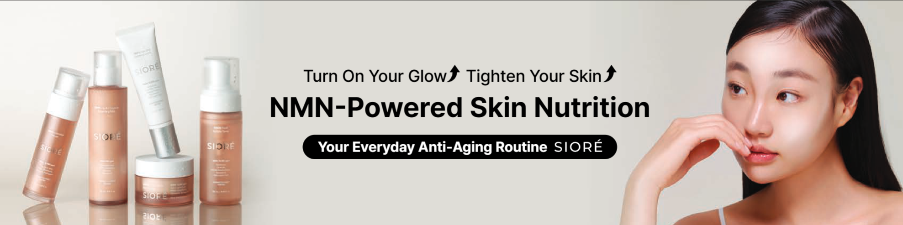

약국전용 피부고민상담
1
피부 고민 선택
›
2
피부 타입 선택
›
3
맞춤 추천 확인
피부 고민을 선택해주세요
해당되는 고민을 모두 선택해 주세요 (복수 선택 가능)
✓
💧
극건조 / 당김
✓
🌸
민감 / 예민
✓
🔴
열감 / 홍조
✓
✨
안티에이징
✓
💎
광채 / 톤업
✓
🌿
트러블 / 여드름
✓
🫧
피지 / 번들거림
✓
🛡️
장벽 회복
✓
🍃
각질 / 피부결
다음 단계 →
피부 타입을 선택해주세요
현재 피부 상태와 가장 가까운 타입을 하나만 선택해 주세요
🏜️
건성
당기고 건조한 피부
💦
지성
유분↑ 번들거리는 피부
☯️
복합성
T존 지성 / 볼 건성
🌷
민감성
자극에 예민한 피부
🔴
트러블성
여드름·트러블 잦은 피부
← 이전
추천 세트 보기 →
🔄 처음으로 돌아가기
💬 피부 상담 문의
시오레 전문 상담사
전송